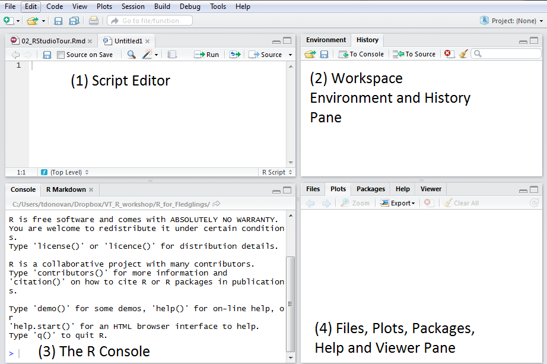

+ Addition
- Subtraction
* Multiplication
/ Division
^ Exponentiation1 Working with R and RStudio: the basics
When you open RStudio, you will see four windows (also called panes). You can change the order of the windows under View > Panes. You can also change their shape by clicking the minimize or maximize buttons on the top right of each panel. For this course it is best if you leave all panes at their original location.
The source pane is where you create and edit RScripts (more on this below).
Environment/History pane: Here R shows you the names of all the data objects (like vectors, matrices, and dataframes) that you opened in your current R session and shows you information like the number of observations and rows in data objects. The History tab shows you a history of all the code that was evaluated in the Console.
The console is where R actually evaluates code. At the beginning of the console you will see the character ‘>’. You can type code directly into the console and get an immediate response. For example, if you type 1+1 into the console and press ENTER, R immediately gives an output of 2.
The Files / Plots / Packages / Help panel shows a lot of helpful information.
- Files - The files panel gives you access to the file directory on your hard drive.
- Plots - The Plots panel shows all your plots.
- Packages - Shows which R packages are installed on your computer (see more below)
- Help - Shows the help information for R functions.

1.1 Interacting with the console: Using R as a calculator
R can be used as a powerful calculator. You can simply enter equations directly at the prompt in the command console (the window with the > symbol). Simply type your arithmetic expression and press ENTER on Windows keyboards and RETURN on Mac keyboards. R will evaluate the expressions and respond with the result.
For simple arithmetic expressions, the operators R uses are:
1.1.1 Using parentheses
If you want to add 6 and 3, then multiply the result by 2, you need to add parentheses. This imposes an order for the calculation of the result (i.e. first add 6 and 3 and then divide by 2). In the case of this example, you could enter
(6 + 3) * 2[1] 18This will return the result 18.
1.1.2 More complex equations
You can write more complex expressions that use parentheses and operators.
The order of operations can be remembered by the acronym PEMDAS, which stands for: parentheses, exponents, multiplication and division from left to right, and addition and subtraction from left to right. Take the following equation:
\[ \frac{18 * 4^2 - (4+2)}{3} \]
You enter this in the RStudio command console as follows:
(18*4^2-(5+4))/3[1] 93Notice how you can control the order of evaluation by using parentheses.
- Internally, R first calculates
18*4^2(= 288). It follows the rules outlined above (PEMDAS), so there is no need to put a parenthesis around4^2. Exponents are calculated before multiplication so we do not need to specify this via a parenthesis. - From this we subtract
5+4(288-9 = 279). - Finally, we divide by 3.
This returns:
[1] 931.2 ‘base’ R and additional packages
When you download R from the Comprehensive R Archive Network (CRAN), you get the ‘base’ R system. This software contains basic functionality and implements the R language. However, one of the reasons why R is so useful is the large collection of additional packages that extend the basic functionality of R. R packages are developed and published by the larger R community. There are thousands of packages available covering a wide range of topics.
The primary location for obtaining R packages is CRAN. There are some additional locations but you do not have to worry about this for now.
1.2.1 Installing and loading an R Package
To install a package, you use the install.packages() function and then write the name of the package. You must include quotation marks around the name of the package, i.e. install.packages("<the package's name>"). For example, if you want to install the package ‘rio’ (an R package which makes data import and export in R very quick), you write:
install.packages("rio")R will automatically install everything it needs. Once you have installed a package, it remains on your laptop. Therefore, installing an R package only needs to be done once (until you install R again).
Please note: Packages that are needed for this course are pre-installed on all PCs at Leiden University. Therefore, this step can be skipped when you work on PCs at the university and you can simply load them (see next step). If you use your own laptop, you must first install the package.
Installing a package does not make it immediately available to you in R. Before you can use the package and the functions that come with it, you must load it into R. To load packages into R, the library() function is used. When loading a package, you do not use quotation marks. To load the ‘rio’ package into R, you would write:
library(rio)If you try and load a package that is not installed, you get an error (‘Error in library(rio) : there is no package called 'rio'’).
1.3 R scripts
The console window (in RStudio, the bottom left panel) is the place where you can type commands directly into the console, but they will be forgotten when you close the session.
Often, we do not simply want to work in the console but we want to keep our commands and save them. A common way to do this is to work in an R script. This is a text file that contains all commands that you would enter on the command line of R. This keeps everything nicely organized.
It is easy to create a new script in RStudio. We can use the menu (“File” → “New File” → “R Script”) or with the keyboard shortcut “Command+Shift+N” on a Mac or “Ctrl+Shift+N” on Windows and Linux. Afterwards, the editor appears as a new pane in the top left of the RStudio window.
You can write all commands that are needed for your project. For example, we could write these three lines:
print("This is my first R script")
1+1
17-8*21.3.1 Annotating R scripts
You can add comments by annotating the R Script. Annotating it will make it much easier for yourself or people you collaborate with. You can use the symbol # to start an annotation. When you run a command, R will ignore everything after this symbol. Going back to my earlier example, assume you want to add a comment after the formula then you can write:
(18*4^2-(5+4))/3 #This is a nice formula.1.3.2 Executing code in R scripts
To run a command in an R script, you have several options:
- Put the cursor on the line of the command and then click the ‘Run’ button at the top of the file window.
- Put the cursor on the line of the command and press CTRL + ENTER on Windows PCs or COMMAND + ENTER on Mac.
- You can also select the whole line and press ‘Run’ or CTRL + ENTER). Note that if you do this you have to select the whole line. Otherwise, R will only execute the part of the command that you have highlighted.

After you pressed ‘Run’ or CTRL + ENTER, R will execute the command.
If you have added an annotation (see above), R but will exclude the text behind #.
You can run of course run multiple lines. For example, if your R Script contains these three commands:
print("This is my first R script")
1+1
17-8*2You can select everything that you want to execute (i.e. the whole text or the first two lines, etc.) with your mouse cursor and then click the ‘Run’ button at the top of the file window or press CTRL + ENTER on Windows PCs or COMMAND + ENTER on Mac.
1.3.3 Saving / Opening an existing R script
You can save your script by clicking on File > “Save as…” or by clicking the Save icon at the top of the Script Editor panel. When you do that, a Save File option menu will open. Give the R script an informative name, so you can find it when you want to open it later. You can open an existing R script via File > “Open file…”
1.4 R Markdown file
Another common format is the R Markdown file. An R Markdown document is written in an easy-to-write plain text format and contains chunks of embedded R code. The great thing about R Markdown is that you can include code chunks (and in-line code) to report output and statistical analysis.
Once you export it, you can turn your text into high quality documents, reports, presentations and dashboards. This document, for example, is an R Markdown file.
RStudio will automatically install the required
rmarkdownpackage and load it when necessary.
1.4.1 Editing R Markdown files
For now, you do not have to know how to create R Markdown files. However, we will use them throughout the course for exercises and assignments so you need to know how to work in them.
R Markdown files have the .Rmd extension. Once you click on them, R Studio should open them. If it does not, you can open them via “File” → “Open File”. When you first open them, they will look like an R Script (with some colored code). It is easier to work in them using the ‘Visual’ mode. On Windows PCs you can switch to this mode via ‘CTRL + SHIFT + F4’. On Apple Macs you can switch to this mode via ‘COMMAND ⌘ + SHIFT + F4’. You can also click on the button ‘Visual’.

To execute code, you can select the code and press ‘CTRL + ENTER’ or, alternatively, click on the little green arrow.
You can also change the code and add new code in the field.

Once you execute the code, R will display the results.
1.4.2 ‘Knitting’ an R Markdown file
You can transform your markdown file into an HTML, PDF, or Word document that you can upload on Brightspace. To do this, click the Knit icon that appears above your file in the scripts editor. After this, a document will be generated that includes both content as well as the output of any embedded R code chunks within the document.

You can save your .Rmd file with “File” → “Save File As…”.
1.5 Setting up an R Project
When you work with R, you will likely have several files related to what you are working on: a file with the data set, a file with your R script (or R Markdown file) and perhaps some output that you save. To keep track of all the files related to a project, we recommend setting up an R Project.
Click “File” → “New Project”
Click “New directory” and then “New Project”
Enter your project name under ‘Directory name’ and specify in which folder the project will be located by clicking ‘Browse’ and selecting a folder. Then click ‘Create Project’

R will now create the project and open the folder in the Files view at the bottom of the project.
Set up a Project for this course, and save all assignment, exercises and data files for this course in the project folder/directory.
Using File → Open Project you can open an existing project and continue working on it.
1.6 Manually entering data into R
In R, the main and most used way to enter data is the left-arrow operator (<-). This assignment operator is used to assign a value.
The combination object <- content means “assign the value of the result from the operation on the right hand side (‘content’) to the object on the left hand side (‘object’)”.
R can also deal with other assignment operators but my suggestion is to stick with the <- operator. This is the most conventional assignment operator used and is what you will find in all the base R source code.
1.6.1 Storing data in an object
R can deal with many different input forms (text, numbers, dates, etc,). You can determine the types of data that will be stored in the object. Let us assume, I want to assign the numeric value 12 to an object called ‘my_first_variable’.
We create an object called ‘my_first_variable’ (note that you cannot have a space in the name) and assign one value (12) to it. To do this in R we use the symbols <-. You write it like this:
my_first_variable <- 12If you then call ‘my_first_variable’ by selecting the text with our mouse cursor and pressing CTRL + ENTER then R will display the content of the object.
my_first_variable [1] 12If we check the data type via class(), we can see that this is a ‘numeric’ object. This is used if the values are numbers or if the values contain decimals.
class(my_first_variable)[1] "numeric"At this point, it is maybe good to note that R is a case sensitive programming language. Meaning all variables, functions, and objects must be called by their exact spelling. If you try and call the object ‘my_first_variable’ by writing ‘My_first_variable’ (note the capital ‘M’), R will not be able to find it.
Of course, we can also enter decimal numerals. You must use a ‘dot’ as decimal separator for this:
my_second_variable <- 6.521
my_second_variable [1] 6.521When we inspect this object we can see that it is again a ‘numeric’ object.
class(my_second_variable)[1] "numeric"We can also store text. In R, text is termed as a ‘string’. A string is a piece of text that is represented as a sequence of characters (letters, numbers, and symbols). It can be made of one character or contains a collection of characters. Any value written within a pair of single quote or double quotes in R is treated as a string. It is more common to use doubles quotes (““) than single quotes (’‘) around the text. This will create a ’character’ variable.
a_text_variable <- "Hello, world"a_text_variable[1] "Hello, world"As explained above, you can use double quotation marks or single quotation marks. While this will lead to the same outcome, I would recommend that you stick with double quotation marks.
a_text_variable <- 'Hello, world'
a_text_variable[1] "Hello, world"1.6.2 Creating a vector
So far, our object only contains one value. If we want to store different values then we must create a vector. Vectors are essential objects in R. They are the building block for data frames which we will cover later. Let us create a numeric vector which contains all numbers from 1 to 5 and the value 8.5. To do this we use c() to indicate that a list of values is followed. The ‘c’ inc() stands for combine.
my_first_vector <- c(1, 2, 3, 4, 5, 8.5)
my_first_vector[1] 1.0 2.0 3.0 4.0 5.0 8.5If we check the data type via class(), we can see that this is a ‘numeric’ object. This is used if the values are numbers or if the values contain decimals.
class(my_first_vector)[1] "numeric"We can also create a vector with text instead of numbers.
color_vector <- c("blue", "red", "green", "white", "black", "yellow")
color_vector[1] "blue" "red" "green" "white" "black" "yellow"As was stated above, R uses the data type ‘character’ when storing text. If we check the data type via class(), we can see that this is a ‘character’ object.
class(color_vector)[1] "character"Can we mix numbers and text? No. Vectors are limited to 1 type of data (i.e. you can store numbers or strings but not both). What happens if we mix numbers and strings?
mixed_vector <- c(1, "red", 3, "white", "black", 6)R creates the vector as instructed but automatically makes this a ‘character’ vector (see the double quotation marks when we call the vector and the ouput from class(mixed_vector)):
mixed_vector[1] "1" "red" "3" "white" "black" "6" class(mixed_vector)[1] "character"1.6.3 Creating variables in R
Now that we know how to store data, we can use it to build categorical and continuous variables.
1.6.3.1 Categorical data: Factors
For categorical data (nominal and ordinal data), we use a factor. Factors are used to categorize the data and store it as levels. They can store both characters and numbers (integers, decimals).
1.6.3.1.1 Nominal data
Suppose we have a nominal variable with directions. First we create a vector as input.
data <- c("East", "West", "East", "North", "North", "East", "West", "West", "West", "East", "North")So far, this simply a sequence of strings. If we call the object ‘data’ then we get:
data [1] "East" "West" "East" "North" "North" "East" "West" "West" "West"
[10] "East" "North"To inform R that this is a categorical variable we must specify that it is a factor. We can do this by adding factor() around the expression:
directions <- factor(c("East", "West", "East", "North", "North", "East", "West", "West", "West", "East", "North"))Internally, R stores these factors as integers (=whole numbers), and uses the strings as labels. If we call the object ‘directions’ now we get:
directions [1] East West East North North East West West West East North
Levels: East North WestAs you can see, R treats this now as as categorical (nominal) variable.
We can also get more information on the unique values of our factor by using levels():
levels(directions)[1] "East" "North" "West" Using strings for factors is preferred because we can use the labels for information. It is of course possible to use integers, i.e. 1 for ‘North’ 2 for ‘East’, 3 for ‘South’ and 4 for ‘West’. However, this can make it difficult to know what the numbers mean without checking which labels they represent. Therefore, I would advice you to use strings when you create your own factors.
1.6.3.1.2 Ordinal factor levels in R
The previous example used a nominal variable (i.e. no clear ordering of the categories). Ordinal variables, on the other hand, have clear ordering of the categories. This could be values such as low, medium, and high. To do this, we create factors with inherent ordering of the categories by adding levels = c(), ordered = TRUE. For example, we can create a factor with temperature using “low”, “medium”, “high”.
temperature <- factor(c("low", "high", "medium", "high", "low", "medium", "high"), levels = c("low", "medium", "high"), ordered = TRUE)temperature[1] low high medium high low medium high
Levels: low < medium < high1.6.3.2 Interval / ratio variables
Interval/ratio data can be coded as variables with numbers (whole numbers or decimals). To create a continuous variable, we can simply create a vector with integers or decimals:
exam_points <- c(2, 7, 3, 4, 2, 0)1.7 Data frames
Arguably one of the powerful and widely used data structures in R are data frames. Data frames have two dimensions and consist of multiple variables, one in each column. Each row represents one case about which we have information. This is a very simple example of a data frame:
stud_id stud_name grade
1 1 Arnold 6.5
2 2 Dan 5.5
3 3 Ina 7.0
4 4 George 9.0
5 5 Sophie 8.5This example data frame has information about five students (one per row). It contains three variables: Student ID (stud_id), their name (stud_name) and their grade (grade). So we have three columns.
It is possible to create a data frame by manually entering data, normally we will load a data frame from a file.
You may encounter the term
tibblelater on, which is essentially the same thing as a data frame.
1.7.0.1 Viewing the data in RStudio
Once you have entered or loaded data, R studio displays this in the ‘Environment pane’ on the right. You can click the data frame name (student.data in our example) to inspect the data in a separate window.

1.7.0.2 Creating data frames from vectors
You can use the data.frame() function to combine individual vectors into a single data frame. This will combine your vectors into a single data frames: each vector will be in a separate column. Each row represents one case about which we have information. Below I create three vectors: one about the day of the week, one about the temperature of that day and a factor variable about the type of weather. Then I combine them into a data frame called ‘weather’. Note that we use factor() for the factor variable.
day = c("Monday", "Tuesday", "Wednesday", "Thursday","Friday")
temp = c(7, 5, 7, 8, 8)
type <- factor(c("cloudy", "showers", "rainy", "cloudy", "rainy"))
weather <- data.frame(day, temp, type)
str(weather)'data.frame': 5 obs. of 3 variables:
$ day : chr "Monday" "Tuesday" "Wednesday" "Thursday" ...
$ temp: num 7 5 7 8 8
$ type: Factor w/ 3 levels "cloudy","rainy",..: 1 3 2 1 2weather day temp type
1 Monday 7 cloudy
2 Tuesday 5 showers
3 Wednesday 7 rainy
4 Thursday 8 cloudy
5 Friday 8 rainyweather <- data.frame(day, temp, type)-
This creates a new data frame called ‘weather’ which combines the three vectors ‘day’, ‘temp’ and ‘type’. Replace the names of the data frame and the vectors by the name of your data.
str(weather)-
This part of the code display the internal structure of the data frame.
1.7.1 Inspecting the data
1.7.1.1 The $ operator
The ‘dollar sign’ operator ($) is incredibly important when we work with data frames. First, it can be used to access variables in data frames. For example, we can look at the variable ‘grade’ by writing:
student.data$grade[1] 6.5 5.5 7.0 9.0 8.5You can also create new variables. For this, we use the operator ‘<-’. Let us create a new variable in our ‘weather’ data frame which is a numeric variable about the humidity on that day.
weather$humidity <- c(71, 84, 89, 76, 85)
weather day temp type humidity
1 Monday 7 cloudy 71
2 Tuesday 5 showers 84
3 Wednesday 7 rainy 89
4 Thursday 8 cloudy 76
5 Friday 8 rainy 85Make sure that the number of observations of the new vectors is the same as the number of observations in the data frame. For example, below I try to add another variable about the wind speed. However, because this variable only has 4 observations, R will give an error:
weather$wind <- c(27, 14, 21, 18) #this vector has only 4 observationsError in `$<-.data.frame`(`*tmp*`, wind, value = c(27, 14, 21, 18)): replacement has 4 rows, data has 51.7.1.2 head() and tail()
If you have a data frame with many observations, it can be helpful to print only the first few rows. Our example data set is small, but we can still use it to illustrate the use of the two functions:
head(student.data) stud_id stud_name grade
1 1 Arnold 6.5
2 2 Dan 5.5
3 3 Ina 7.0
4 4 George 9.0
5 5 Sophie 8.5head(student.data, n = 3) stud_id stud_name grade
1 1 Arnold 6.5
2 2 Dan 5.5
3 3 Ina 7.0tail(student.data, n = 3) stud_id stud_name grade
3 3 Ina 7.0
4 4 George 9.0
5 5 Sophie 8.5head(student.data)-
This displays the first five rows of a data frame. Replace
student.databy the name of the appropriate data frame. head(student.data, n = 3)-
If we specify n = … We can specify how many rows of data we would like to display, in this example 3 rows.
tail(student.data, n = 3)-
Tail displays the last n rows of data. If you leave out n = … it will display the last 5 rows of data.
1.7.2 Loading data into R
You can import data into R for analysis and data manipulation (changing variable names, selecting cases, recoding the values of variables, etc.).
Using the import function from package rio, we can import various file formats into R, including Microsoft Excel files, CSV files, SPSS, Stata or R files:
Suppose we want to open a comma-separated values (CSV) file. A .csv file is the most used file format for data storing. Our example file is called ‘deniro.csv’ (available here) which contains Rotten Tomato ratings of movies with Robert De Niro. There are 87 records. Each record has Year, Rating, Title.
Make sure to save the file to your project folder, because that is where R will look for the file when you open it.
You can import this data set in R using the following code:
library(rio)
deniro_data <- import("deniro.csv") library(rio)-
This loads the package ‘rio’ into R. You only need to do this once at the start of your R session.
import("deniro.csv")-
import()is a function in the rio package that allows you to import files in almost any format. The functionimport()infers the file format from the file’s extension and calls the appropriate data import function for you, returning a simple data.frameIn this example we load a file called
deniro.csvand save it to a data frame calleddeniro_data. You can specify any name you would like for a data frame.
Importantly, if you include only a file name (here: deniro.csv), R will assume this file is located in your current working directory. If you are working in an R Project, this working directory is the same as your project folder.
We can now display the contents of this data frame:
print(deniro_data) Year Score Title
1 1968 86 Greetings
2 1970 17 Bloody Mama
3 1970 73 Hi, Mom!
4 1971 40 Born to Win
5 1973 98 Mean Streets
6 1973 88 Bang the Drum Slowly
7 1974 97 The Godfather, Part II
8 1976 41 The Last Tycoon
9 1976 99 Taxi Driver
10 1977 47 1900
11 1977 67 New York, New York
12 1978 93 The Deer Hunter
13 1980 97 Raging Bull
14 1981 75 True Confessions
15 1983 90 The King of Comedy
16 1984 89 Once Upon a Time in America
17 1984 60 Falling in Love
18 1985 98 Brazil
19 1986 65 The Mission
20 1987 100 Dear America: Letters Home From Vietnam
21 1987 80 The Untouchables
22 1987 78 Angel Heart
23 1988 96 Midnight Run
24 1989 64 Jacknife
25 1989 47 We're No Angels
26 1990 88 Awakenings
27 1990 29 Stanley & Iris
28 1990 96 Goodfellas
29 1991 76 Cape Fear
30 1991 69 Mistress
31 1991 65 Guilty by Suspicion
32 1991 71 Backdraft
33 1992 87 Thunderheart
34 1992 67 Night and the City
35 1993 75 This Boy's Life
36 1993 78 Mad Dog and Glory
37 1993 96 A Bronx Tale
38 1994 39 Mary Shelley's Frankenstein
39 1995 80 Casino
40 1995 86 Heat
41 1996 74 Sleepers
42 1996 38 The Fan
43 1996 80 Marvin's Room
44 1997 85 Wag the Dog
45 1997 87 Jackie Brown
46 1997 72 Cop Land
47 1998 68 Ronin
48 1998 38 Great Expectations
49 1999 69 Analyze This
50 1999 43 Flawless
51 2000 43 The Adventures of Rocky & Bullwinkle
52 2000 84 Meet the Parents
53 2000 41 Men of Honor
54 2001 73 The Score
55 2001 33 15 Minutes
56 2002 48 City by the Sea
57 2002 27 Analyze That
58 2003 4 Godsend
59 2004 35 Shark Tale
60 2004 38 Meet the Fockers
61 2005 4 The Bridge of San Luis Rey
62 2005 46 Rent
63 2005 13 Hide and Seek
64 2006 54 The Good Shepherd
65 2007 21 Arthur and the Invisibles
66 2007 76 Captain Shakespeare
67 2008 19 Righteous Kill
68 2008 51 What Just Happened?
69 2009 46 Everybody's Fine
70 2010 72 Machete
71 2010 10 Little Fockers
72 2010 50 Stone
73 2011 25 Killer Elite
74 2011 7 New Year's Eve
75 2011 70 Limitless
76 2012 92 Silver Linings Playbook
77 2012 51 Being Flynn
78 2012 29 Red Lights
79 2013 46 Last Vegas
80 2013 7 The Big Wedding
81 2013 29 Grudge Match
82 2013 11 Killing Season
83 2014 9 The Bag Man
84 2015 60 Joy
85 2015 26 Heist
86 2015 61 The Intern
87 2016 11 Dirty Grandpa1.7.3 Exporting a data frame
To save a data frame, we use the export() function. I will use it save our data frame with student scores from earlier:
export(student.data, "student_scores.csv")export(student.data, "student_scores.csv")-
export()is a function in the rio package that allows you to save files in different formats. In the bracket you specify the name of the data frame, followed by the name you wish to give it and the file extension (in this case a csv file).
‘rio’ also supports the export into the native format of R which uses the .rds extension. To do this, we simply write:
export(student.data, "student_scores.rds")After this, we can simply import it again in the same way we did earlier:
student_scores <- import("student_scores.rds")student_scores stud_id stud_name grade
1 1 Arnold 6.5
2 2 Dan 5.5
3 3 Ina 7.0
4 4 George 9.0
5 5 Sophie 8.51.8 The pipe operator
In statistical analysis we often perform multiple operations on a data set or single variable. The pipe operator |> is used to write cleaner code.
The pipe operator basically takes whatever is at its left hand side and inputs it as the first parameter at its right hand side. For example, if we have a vector x:
x = c(1,2,3,4,5)You know that we can calculate the mean of x as follows:
mean(x)[1] 3We can also use the pipe operator to perform this operation:
x |> mean()[1] 3You can read this code as ‘take x and put it as the first argument of the function mean’.
This example is of course trivial (and normally you would simply use mean(x)), but the nice thing about the pipe operator is that we can perform multiple operations in sequence, for example:
x |>
sqrt() |>
mean()[1] 1.676466In this example we take x, calculate the square root for each element of x and then take the mean of this. It is the same as writing mean(sqrt(x)) . The pipe is a cleaner way to write code, particularly if you have many subsequent steps in the pipe. Note that for clarity we usually write the different parts of the pipe on different lines.
1.8.1 Annotating the pipe
If you want to include annotations in the pipe, put them after the pipe, like this:
x |>
sqrt() |> # This calculates the square root
mean() # This calculates the mean[1] 1.676466If you put them before the pipe, R thinks the pipe is part of the comment and will display an error1:
x |>
sqrt() # This is NOT the way to do it |>
mean()If you run this code, the output is:
## Error in mean.default(): argument "x" is missing, with no default1.8.2 Pipes and dataframes
We can also use the pipe operator for data frames. Next week we will learn about several useful functions in the dplyr package that will allow us to create new variables, filter data or select variables. This week we will not actively use the pipe a lot, but we will encounter some code that makes use of it. Now you know it simply means that we take the thing on the left and pass it along to the function on the right.
You may encounter
%>%in code written by others. This is also a pipe operator, which for our purposes works in the same way as|>.
R does not process the pipe operator after sqrt() because it is after the hashtag (#) and thus part of the comment. As a result, R runs the code
x |> sqrt()and displays the result. Then it continues to the linemean()and throws an error, because there are no arguments to the function.↩︎